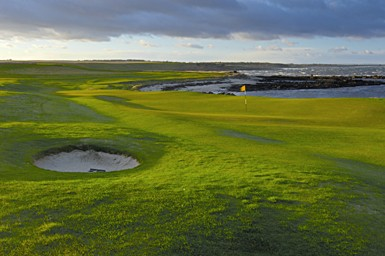
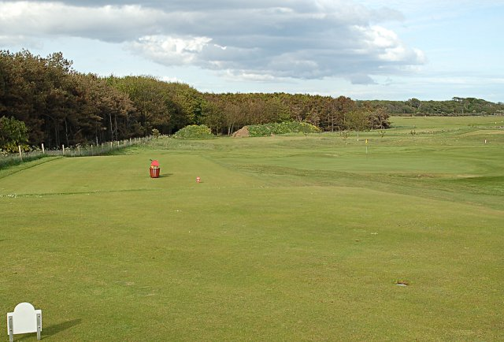
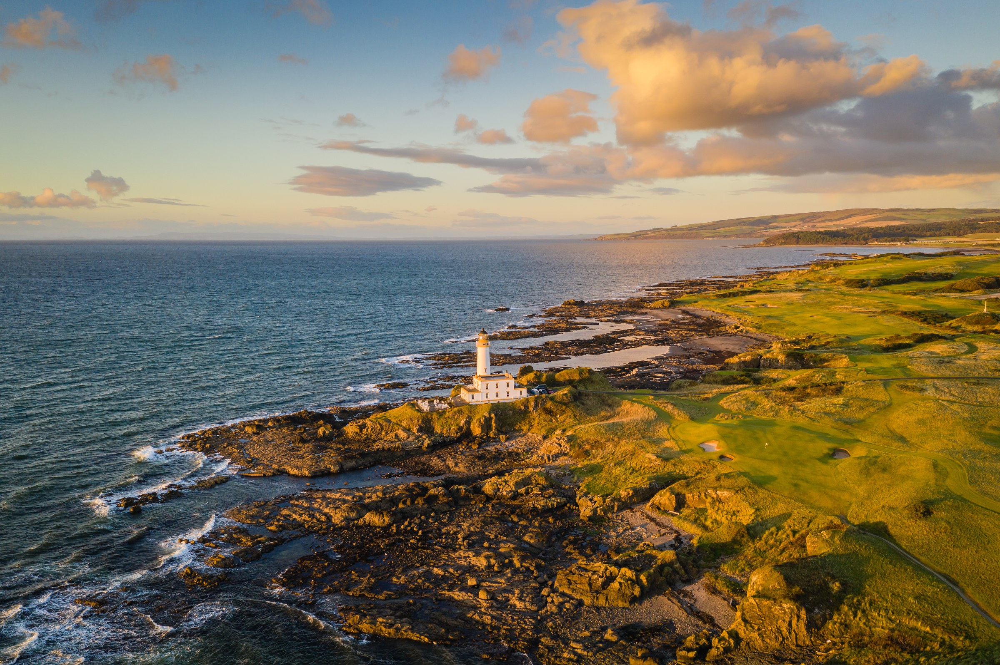
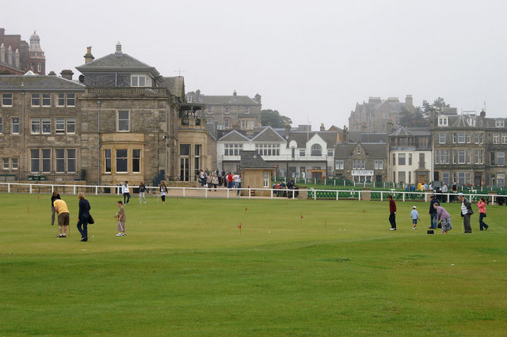
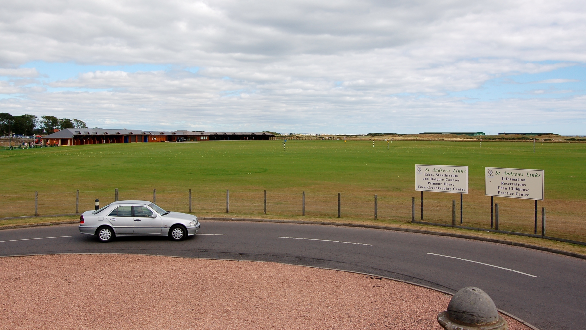
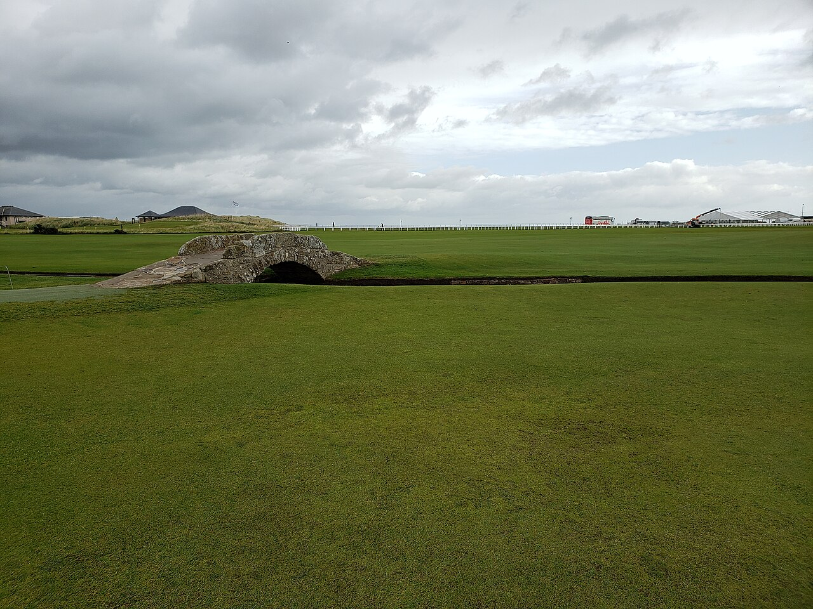
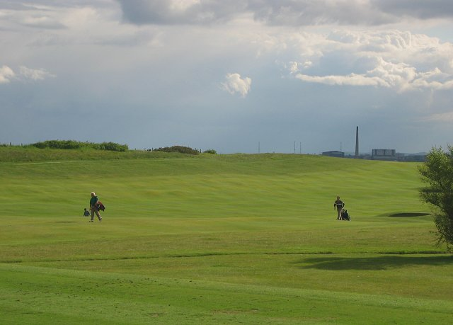

Ayrshire coast to St. Andrews — June 14–21, 2026

The birthplace of The Open Championship. The first Open was contested here in 1860 — eight players, 36 holes, a red Morocco belt as the prize. Old Tom Morris designed the original 12-hole course with little more than a wheelbarrow and a shovel. Six of those original greens are still in use today. Famous for blind shots over towering dunes and cavernous bunkers with no sight of the green.
Wheels down at Edinburgh. A private driver is waiting — no meeting in arrivals, call the number once you have your bags. First round of the trip is waiting at Prestwick in the afternoon.

Established 1878. Eleven Open Championships. The iconic Postage Stamp (8th) — 123 yards, a tiny green, and a history of wrecked scorecards. The Railway (11th) runs parallel to an actual railway line. The 6th hole is the longest par 5 in Open history at 623 yards. Royal charter granted 1978. Par 71, 7,175 yards, shaped by Willie Fernie, James Braid, and Alister MacKenzie.
The Postage Stamp awaits. Royal Troon has hosted The Open 11 times — today it hosts your group. The 8th hole is just 123 yards but don’t let that fool you.

Four Open Championships and one of the most dramatic coastlines in golf. Holes 4–11 hug the Firth of Clyde with sweeping views to Ailsa Craig and the Isle of Arran. The 9th (Bruce’s Castle) plays from a rocky headland directly toward the Turnberry Lighthouse — sheer drop to the rocks below the green. Redesigned in 2016 by Martin Ebert. Venue of the legendary 1977 “Duel in the Sun.”
Wake up at Turnberry, play the course right outside your door, then pack up and head east to St. Andrews for the rest of the trip.

Golf has been played on the Elie links since the 15th century. The current Old Tom Morris layout (1895) is unchanged — making it one of the purest links experiences in Scotland. Famous for 8 front-to-back sloped greens, 16 par 4s and 2 par 3s, four dramatic sea views, and the oldest clubhouse in active use (1875). In 2025 it was officially recognized as the third oldest golf course in the world. And yes — there’s a real submarine periscope in the starter’s hut.
Head down the Fife coast to Elie — one of Scotland’s most historic and intimate links. Golf has been played here since the 15th century. Ask the starter about the periscope.

Opened in 1897 for Queen Victoria’s Diamond Jubilee and completely redesigned to championship standard by Donald Steel in 1988 — making it the toughest of the seven St. Andrews courses. Wedged between St. Andrews Bay and the New Course, with no shared greens or fairways. Elevated tees give views of the North Sea and West Sands Beach. The most underrated course in St. Andrews — by a wide margin.
No transport today — the course is a short walk from your digs. Coastal wind, exposed greens, and views across St. Andrews Bay.

Golf has been played here since the early 15th century, making it the oldest course on earth. Originally 22 holes, standardized to 18 in 1764 — the format the whole world now uses. Seven iconic double greens. The 17th (Road Hole) is the most feared par 4 in championship golf. Hell Bunker covers 300 square yards. The Swilcan Bridge is 700 years old. Bobby Jones. Jack Nicklaus. Tiger Woods. Thirty Open Championships and counting. This is the one.
Photo: Bahnfrend via Wikimedia Commons (CC-BY-SA 4.0)

Founded 1868, designed by Old Tom Morris and later upgraded by James Braid. A former Open Championship qualifying venue along the shores of Largo Bay in Fife. Par 71, 6,371 yards. The 14th hole (“Perfection”) is a downhill par 3 with panoramic views of the Firth of Forth. Adjacent to the oldest women’s golf course in the world (1890), with prehistoric Standing Stones on the second hole dating to 2000 BC.
Photo: Richard Webb via Wikimedia Commons (CC-BY-SA 2.0)
Two-round day if the ballot gods smile. If the Old Course comes through, take that walk in the morning, then head south to Lundin in the afternoon.
The newest course on the tour — opened spring 2020 on the 5,000-acre Balcarres Estate and immediately earned its place among Scotland’s best. Designed by Clive Clark with wide fairways, elevated tees, and coastal holes along Largo Bay that rivals Pebble Beach in scale and drama. Three driveable par 4s add variety. Host of the 2025 Women’s Scottish Open.
The newest gem on the trip — Dumbarnie Links opened in 2020 and immediately earned its place among Scotland’s best. Pebble Beach vibes, Fife prices.
Check out by 10am. Transfer to Edinburgh Airport for the flight home. The clubs go back in the bags — the memories don’t.